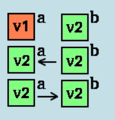
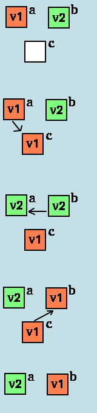
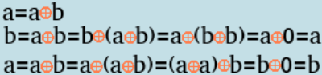
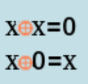

Обмен двух переменных значениями
Итак, есть две переменные. Надо обменять их значения местами. То есть, если переменная a до выполнения алгортма имела значение v1 и переменная b до имела значение v2, то после выполнения алгоритма переменная a должна хранить значение v2, а переменная b, соответственно, - значение v1.
Задача, казалось бы, простейшая. Но есть несколько способов реализации выполняющего её алгоритма, о некоторых вы и не подозревали.
Реализация с использованием третьей, дополнительной переменной
Давайте попробуем реализовать алгоритм "в лоб":
C++
a = b;
b = a;
Pascal
a := b;
b := a;
Python
a = b
b = a
Но есть один нюанс. Обе переменные будут хранить значение v2:
Давайте заведём вторую переменную и попробуем реализовать алгоритм с её использованием:
Теперь его будет совсем несложно реализовать на необходимом языке:
C++
c = a;
a = b;
b = c;
Pascal
c := a;
a := b;
b := c;
Python
c = a
a = b
b = c
Это - самый простой и универсальный способ обменять две переменные значениями. Но существуют и ещё несколько, без использования третьей (это может пригодиться, например, на олимпиаде), которые работают в конкретных случаях. Далее они будут разобраны. Если у вас нет табу на третью переменную, то дальше можно не читать.
Базовые алгоритмыРеализация через битовые операции
Для понимания того, что будет дальше, необходимо владеть битовыми операциями хотя бы на базовом уровне.
Это основывается на двух свойствах оператора XOR (исключающее ИЛИ):
Реализуется это чудо на основных языках безо всяких проблем, но неприменимо к строковым переменным, а только к числам. Зато оно работает быстрее, чем обмен через третью переменную.
C++
a = a ^ b;
b = a ^ b;
a = a ^ b;
Pascal
a := a xor b;
b := a xor b
a := a xor b;
Python
a = a^b
b = a^b
b = a^b
Реализация через арифметику
Этот способ для понимания требует владения арифметикой на уровне 5-6 классов:
a = a + b
b = a - b = (a + b) - b = a + b - b = a
a = a - b = (a + b) - a = b + a - a = b
В реализации его также нет никаких сложностей:
C++
a = a + b;
b = a - b;
a = a - b;
Pascal
a := a + b;
b := a - b;
a := a - b;
Python
a = a + b
b = a - b
a = a - b
Реализация через средства языка Python
Язык Python обладает встроенной в синтаксис возможностью выполнения обмена двух переменных значениями:
Python
a, b = b, a
Всё! Готово. Но стоит помнить, что Python, вследствие его интерпретируемости, обладает невысокой скоростью быстродействие, следовательно, его применение в олимпиадах есть вопрос неоднозначный. Однако вне олимпиад рекомендуется использовать этот способ, как наиболее краткий и простой.
Базовые алгоритмы ©Все права защищены